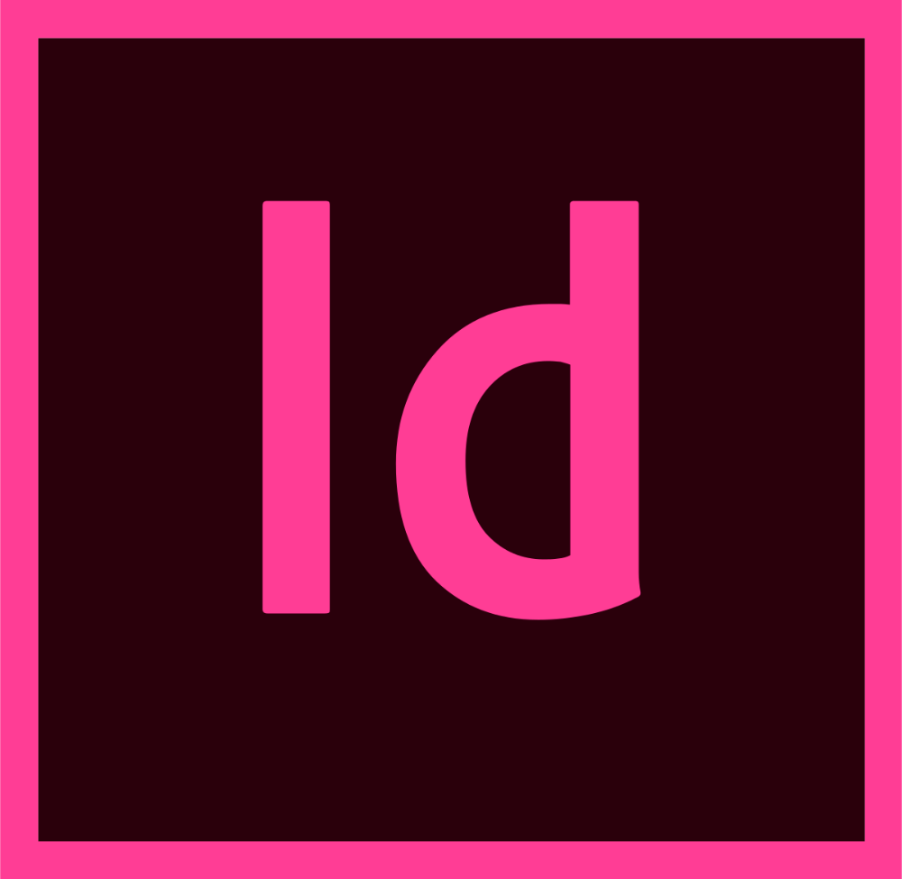
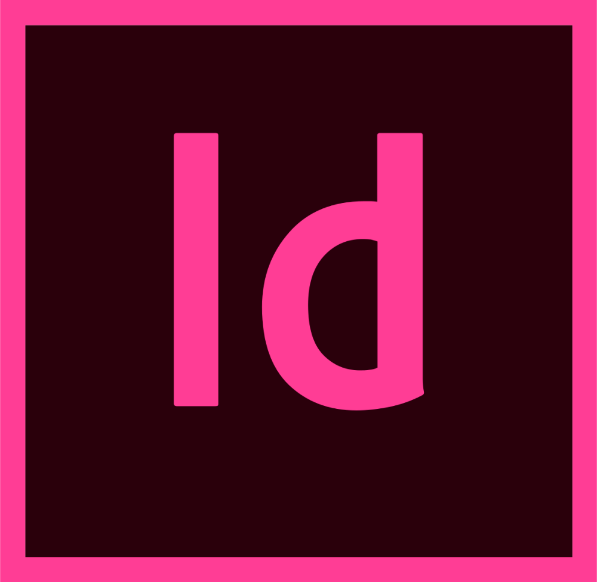

This is me
Hi, my name is Ashley Keuning, nice to meet you! I am 18 years old and currently in the second year of my study Communication and Multimedia Design at the University of applied sciences in Amsterdam.
I'm a digital designer with a focus on creating UI/UX designs, but I am also interested in computer programming as well. I love to work on every part of the entire design proces, from discovering and defining to designing and creating the product. My goal is to create innovative and meaningful products that gives users a memorable experience.
I describe myself as a ambitious, enthusiastic, hardworking person who is motivated to try out and learn new things to improve my skills and broaden my knowledge. When you don't see me busy designing behind my desk, you can find me at the gym. I love to stay active whether it's fitness or just go for a run. I also enjoy relaxing, like watching movies and binge watch series, reading books, listening to music or hang outside whenever it's possible.
adobe creative cloud

 

computer programming